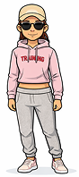
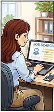
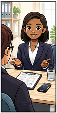
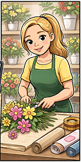
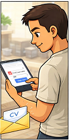
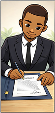
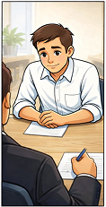
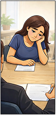

Periode
Periode
Week 9-11
2 april t/m 15 april 2026
De eerste stap in onze sprint: desk research inzichten, ontwerpvraag, pact-analyse en stakeholdermap.
 Periode
Periode
Week 9-11
2 april t/m 15 april 2026
 Focus
Focus
Onderzoek
User research & analyse
Welke functionaliteiten moeten we verwerken in ons prototype om werkzoekende laaggeletterde tussen 18 en 60 te ondersteunen in het sollicitatieproces?
In deze sprint gaan wij proberen in contact te komen met de doelgroep en bij hun onze probe te testen.
In Nederland bestaan er verschillende ongeschreven en geschreven normen rondom solliciteren. Denk hierbij aan kledingkeuze, houding tijdens een gesprek en de stappen binnen het sollicitatieproces. Voor veel mensen is deze kennis niet vanzelfsprekend, waardoor zij fouten kunnen maken bij het zoeken naar werk.
In deze probe onderzoeken we wat onze doelgroep al weet en wat minder bekend is. Op basis hiervan willen we inzicht krijgen in de volgende aannames:
De probe verloopt als volgt:
De deelnemer krijgt een vraag te horen en ontvangt vervolgens meerdere kaarten. De deelnemer kan aangeven welke kaarten volgens hen wel of niet passend zijn bij de vraag.
Het is belangrijk dat duidelijk wordt gemaakt dat er geen goede of foute antwoorden zijn. Het doel is om inzicht te krijgen in wat de deelnemer al kent en wat (nog) niet bekend is.









Afgelopen sprint hebben wij onder andere contact opgezocht met Tom Adriaanse, beleidsadviseur Taal bij de gemeente Rotterdam. Tijdens de interview hebben wij feedback gevraagd over onze twee probes, aannames, persona's en onze eindproduct concepten. Tom was over het algemeen heel positief over onze producten met kleine puntjes van feedback, advies en mogelijkheden.
Op basis van dit gesprek hebben wij besloten als team om het concept: learning app verder uit te werken tot eerste prototype, een vierde persona te ontwikkelen, contact op te zoeken met Rotterdam Rijnmond en werkcoaches, inzitten op taallessen en hudige probes testen.